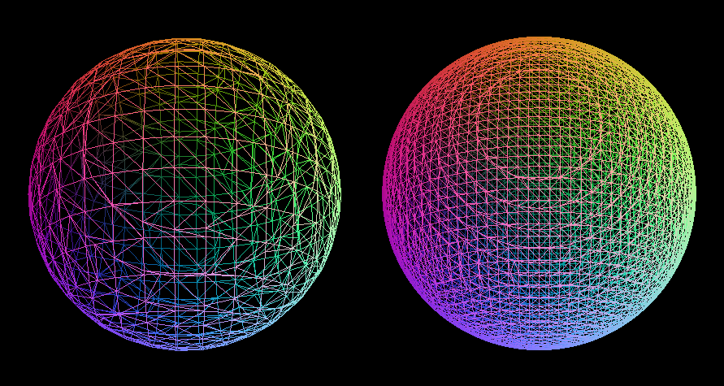
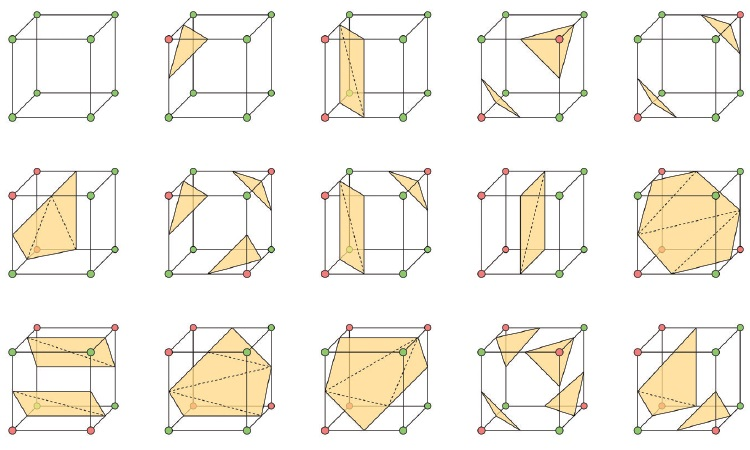
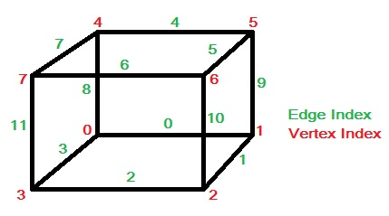
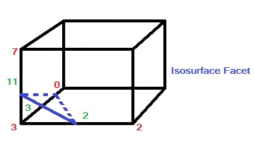

MarchingCubes算法

[1].水泡动画模拟（Marching Cubes） - 算法小丑 - 博客园 (cnblogs.com)
[2].【算法】Marching Cubes算法理解 (tandy123.github.io)
[3].Matt’s Webcorner - Marching Cubes (stanford.edu)
[4].Marching Cubes Tutorial – BorisTheBrave.Com
参考上面的内容进行的总结
等值面：
空间中所有具有某个相同值的点的集合，可以类比为地形图里的等高线。
$\{ (x,y,z)|f(x,y,z) = c \}$ ，$ c$是常数。
例如在三维图像中整个球体的表面就是一个等值面$f(x,y,z)=x^2+y^2+z^2=r^2$
引用[3]中的内容作为例子：
We iterative over all cubes, adding triangles to a list, and the final mesh is the union of all these triangles. The smaller we make our cubes, the smaller the mesh triangles will be, making our approximation more closely match the target function. As a simple example, the function $x^2 + y^2 + z^2 - 1 = 0$ represents the unit sphere. Below is the result of using marching cubes on this function, shown at two possible grid resolutions:
我们在所有立方体上迭代，将三角形添加到列表中，最终网格是所有这些三角形的并集。我们制作的立方体越小，网格三角形就越小，从而使我们的近似更接近目标函数。作为一个简单的例子，函数$x^2+y^2+z^2-1=0$表示单位球。下面是在此函数上使用行进立方体的结果，以两种可能的栅格分辨率显示：

下面是[1]中对该算法的主要思想的描述
算法主要的思想是在三维离散数据场中通过线性插值来逼近等值面，具体如下：三维离散数据场中每个栅格单元作为一个体素，体素的每个顶点都存在对应的标量值。如果体素顶点上的值大于或等于等值面值，则定义该顶点位于等值面之外，标记为“0”；而如果体素顶点上的值小于等值面值，则定义该顶点位于等值面之内，标记为“1”。由于每个体素单元有8个顶点，那么共存在$2^8 = 256$种情形，下图是Marching Cubes算法的15种基本情形，其他241种情形可以通过这15种基本情形的旋转、映射等方式实现。

也就是判断当前的体素单元上的8个点分别处于等值面的什么位置是在，因为是8个点所以总共有$2^8$次这么多种情况，当然考虑到对称等情况最后就减少到了上述的15种情况。然后在该体素单元格中选择相应情况的三角形，最后组合起来就是完整的曲面近似。
下述内容取自[1]
每个体素单元上顶点和边的索引规则如下图左所示，假如体素下方的顶点3的值小于等值面值，其他顶点上的值都大于等值面值（如下图右所示），那么我们可以生成一个与体素边2，3，11相交的三角面片，而三角面片顶点的具体位置则需要根据等值面值和边顶点3-2，3-0，3-7的值线性插值计算得到。

对于与等值面存在交点的体素边，交点坐标用$P$表示，$P_1$、$P_2$代表边上两个端点的坐标，$V_1$、$V_2$代表这两个端点上的值，$V$代表等值面值，那么交点坐标的计算公式如下：
程序实现的细节就留到以后需要编程实现的时候再回头来补充好了，现阶段只需要直到该算法的基本思想就好。